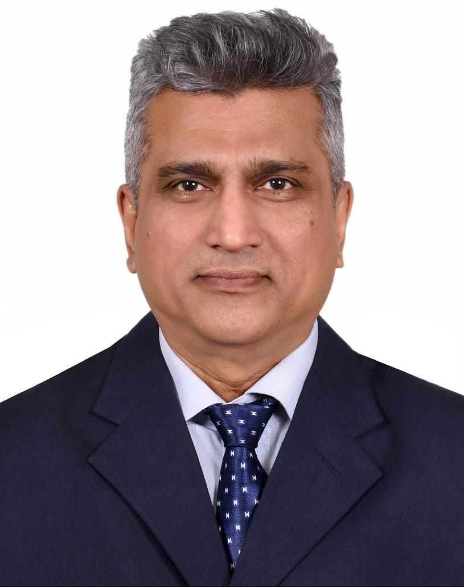
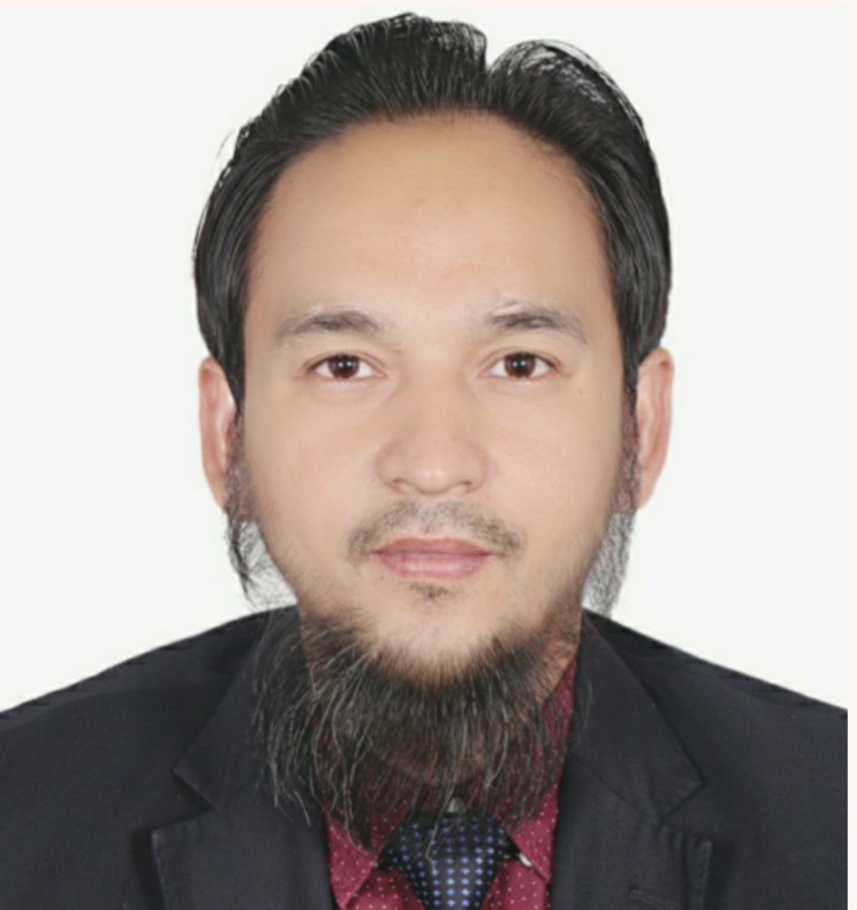

Frontier Research & Innovation Foundation
0%
Guiding our foundation with vision, integrity, and dedication. Meet the executive committee members steering research, innovation, and community social work.
Provides overarching legal, financial, and strategic oversight. Ensures strict compliance with non-profit mandates and ethical guidelines.
Executes daily foundation operations, manages field interventions, coordinates research projects, and maintains transparent administration.
Maintains statutory compliance, annual financial audits, and formal non-profit governance standards across all divisions.
Service & Social Work
tofayelahmed083@gmail.com

Service & Social Work
rezahq0766@gmail.com

Service & Social Work
faisalazim1316@gmail.com
Service & Social Work
shoab.sunny@gmail.com
Service & Social Work
suhel.pharma@gmail.com
Service & Social Work
imon.mahmud4@gmail.com
Service & Social Work
nirmal.anft.iu@gmail.com
Serves as the President of Pransikha Foundation (Frontier Research and Innovation Foundation). Leads executive decision-making, strategic research initiatives, and social welfare programs aimed at community development across Bangladesh.
Serves as the Vice President of the foundation. Provides governance oversight, institutional strategy, and guides community development, public welfare, and operational standards.
Serves as the General Secretary. Directs daily secretariat operations, program implementation, inter-institutional collaborations, and organizational development.
Serves as the Joint Secretary. Co-manages field activities, disaster relief logistics, operational management, and community outreach programs across districts.
Serves as the Treasurer. Oversees financial planning, budget allocations, audit compliance, and transparent resource management for foundation research and social initiatives.
Serves as the Social Secretary. Manages social development programs, community welfare projects, youth empowerment initiatives, and public engagement.
Serves as the Office Secretary. Coordinates foundation documentation, administrative communications, official record keeping, and internal office management.
Frontier Research and Innovation Foundation welcomes distinguished scholars, institutional partners, and social workers to contribute to our governance and humanitarian initiatives.